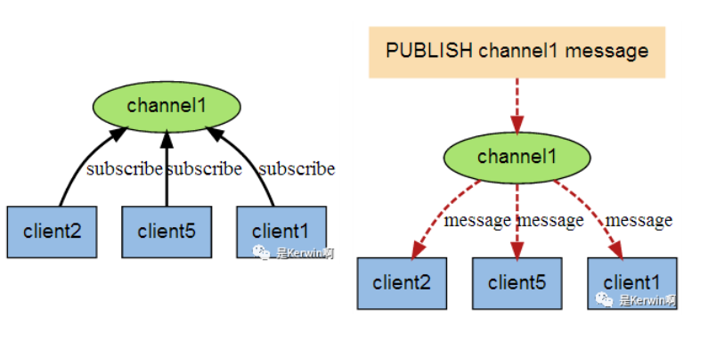

之前已经介绍过redis，本文细致的讲解一下redis实战，如何使用redis。
Windows Redis
安装
链接: https://pan.baidu.com/s/1MJnzX_qRuNXJI09euzkPGA 提取码: 2c6w 复制这段内容后打开百度网盘手机App，操作更方便哦
无脑下一步即可
使用
出现错误：
creating server tcp listening socket 127.0.0.1:6379: bind No error
解决方案：
- redis-cli.exe
- shutdown
- exit
- redis-server.exe redis.windows.conf
启动：redis-server.exe redis.windows.conf
客户端启动：redis-cli.exe (不修改配置的话默认即可)
redis-cli.exe -h 127.0.0.1 -p 6379 -a password
基本文件说明
| 可执行文件 | 作用说明 |
|---|---|
| redis-server | redis服务 |
| redis-cli | redis命令行工具 |
| redis-benchmark | 基准性能测试工具 |
| redis-check-aof | AOF持久化文件检测和修复工具 |
| redis-check-dump | RDB持久化文件检测和修复工具 |
| redis-sentinel | 启动哨兵 |
| redis-trib | cluster集群构建工具 |
基础命令
| 命令 | 说明 |
|---|---|
| keys * | redis允许模糊查询key 有3个通配符 *、?、[] |
| del key | 删除key |
| exists kxm | 判断是否存在 |
| expire key 20 | 设置过期时间 - 秒 |
| pexpire key 20000 | 设置过期时间 - 毫秒 |
| move kxm 2 | 移动key到指定位置库中 2号库 |
| persist key | 移除过期时间，key将会永久存在 成功设置返回1 否则返回0 |
| pttl key | 以毫秒为单位返回 key 的剩余的过期时间 |
| ttl key | 以秒为单位，返回给定 key 的剩余生存时间 |
| randomkey | 从当前数据库中随机返回一个 key |
| rename key newkxy | 更改key的名字，如果重复了会覆盖 |
| renamenx kxm key | 仅当 newkey 不存在时，将 key 改名为 newkey |
| type key | 返回 key 所储存的值的类型 |
| select 0 | 选择第一个库 |
| ping | 返回PONG 表示连接正常 |
| quit | 关闭当前连接 |
字符串命令
| 命令 | 说明 |
|---|---|
| set key aaa | 设置指定 key 的值 |
| get key | 获取指定 key 的值 |
| getrange key 0 1 | 返回 key 中字符串值的子字符 包含 0 和 1 包含关系 |
| getset key aaaaaaaa | 将给定 key 的值设为 value ，并返回 key 的旧值(old value) |
| mget key kxm | 获取所有(一个或多个)给定 key 的值 |
| setex test 5 “this is my test” | 将值 value 关联到 key ，并将 key 的过期时间设为 seconds (以秒为单位) |
| setnx test test | 只有在 key 不存在时设置 key 的值 （用于分布式锁） |
| strlen test | 返回 key 所储存的字符串值的长度 |
| mset key1 “1” key2 “2” | 同时设置一个或多个 key-value 对 |
| msetnx key3 “a” key2 “b” | 同时设置一个或多个 key-value 对，当且仅当所有给定 key 都不存在 其中一个失败则全部失败 |
| incr key | 将 key 中储存的数字值增一 -> key的值 比如为 数字类型字符串 返回增加后的结果 |
| incrby num 1000 | 将 key 中储存的数字值增指定的值 -> key的值 比如为 数字类型字符串 返回增加后的结果 |
| decr key | 同 -> 减一 |
| decrby num 500 | 同 -> 减指定值 |
| append key 1123123 | 如果 key 已经存在并且是一个字符串， APPEND 命令将指定的 value 追加到该 key 原来值（value）的末尾 返回字符串长度 |
哈希(Hash)命令
| 命令 | 说明 |
|---|---|
| hdel key field1 [field2] | 删除一个或多个哈希表字段 |
| hexistskey field | 查看哈希表 key 中，指定的字段是否存在 |
| hget key field | 获取存储在哈希表中指定字段的值 |
| hgetall key | 获取在哈希表中指定 key 的所有字段和值 |
| hincrby hash yeary 1 | 为哈希表 key 中的指定字段的整数值加上增量 increment |
| hkeys hash | 获取所有哈希表中的字段 |
| hlen hash | 获取哈希表中字段的数量 |
| hmget hash name year | 获取所有给定字段的值 |
| hmset hash name “i am kxm” year 24 | 同时将多个 field-value (域-值)对设置到哈希表 key 中 |
| hset hash name kxm | 将哈希表 key 中的字段 field 的值设为 value |
| hsetnx key field value | 只有在字段 field 不存在时，设置哈希表字段的值 |
| hvals hash | 获取哈希表中所有值 |
| hexists hash name | 是否存在 |
编码: field value 值由 ziplist 及 hashtable 两种编码格式
字段较少的时候采用ziplist，字段较多的时候会变成hashtable编码
列表(List)命令
Redis列表是简单的字符串列表，按照插入顺序排序。你可以添加一个元素到列表的头部（左边）或者尾部（右边）
一个列表最多可以包含 232 - 1 个元素 (4294967295, 每个列表超过40亿个元素)
容量 -> 集合,有序集合也是如此
| 命令 | 说明 |
|---|---|
| lpush list php | 将一个值插入到列表头部 返回列表长度 |
| lindex list 0 | 通过索引获取列表中的元素 |
| blpop key1 [key2 ] timeout | 移出并获取列表的第一个元素， 如果列表没有元素会阻塞列表直到等待超时或发现可弹出元素为止 |
| brpop key1 [key2 ] timeout | 移出并获取列表的最后一个元素， 如果列表没有元素会阻塞列表直到等待超时或发现可弹出元素为止 |
| linsert list before 3 4 | 在值 3 前插入 4 前即为顶 |
| linsert list after 4 5 | 在值4 后插入5 |
| llen list | 获取列表长度 |
| lpop list | 移出并获取列表的第一个元素 |
| lpush list c++ c | 将一个或多个值插入到列表头部 |
| lrange list 0 1 | 获取列表指定范围内的元素 包含0和1 -1 代表所有 （lrange list 0 -1） |
| lrem list 1 c | 移除list 集合中 值为 c 的 一个元素， 1 代表count 即移除几个 |
| lset list 0 “this is update” | 通过索引设置列表元素的值 |
| ltrim list 1 5 | 对一个列表进行修剪(trim)，就是说，让列表只保留指定区间内的元素，不在指定区间之内的元素都将被删除 |
| rpop list | 移除列表的最后一个元素，返回值为移除的元素 |
| rpush list newvalue3 | 从底部添加新值 |
| rpoplpush list list2 | 转移列表的数据 |
集合(Set)命令
Set 是 String 类型的无序集合。集合成员是唯一的，这就意味着集合中不能出现重复的数据
| 命令 | 说明 |
|---|---|
| sadd set java php c c++ python | 向集合添加一个或多个成员 |
| scard set | 获取集合的成员数 |
| sdiff key1 [key2] | 返回给定所有集合的差集 数学含义差集 |
| sdiffstore curr set newset （sdiffstore destination key1 [key2]） | 把set和 newset的差值存储到curr中 |
| sinter set newset | 返回给定所有集合的交集 |
| sinterstore curr set newset （sinterstoredestination key1 [key2]） | 同 |
| sismember set c# | 判断 member 元素是否是集合 key 的成员 |
| smembers set | 返回集合中的所有成员 |
| srandmember set 2 | 随机抽取两个key (抽奖实现美滋滋) |
| smove set newtest java （smove source destination member） | 将 member 元素从 source 集合移动到 destination 集合 |
| sunion set newset | 返回所有给定集合的并集 |
| srem set java | 删除 |
| spop set | 从集合中弹出一个元素 |
| sdiff | sinter | sunion | 操作：集合间运算：差集 |
有序集合(sorted set)命令
Redis 有序集合和集合一样也是string类型元素的集合,且不允许重复的成员。
不同的是每个元素都会关联一个double类型的分数。redis正是通过分数来为集合中的成员进行从小到大的排序。
有序集合的成员是唯一的,但分数(score)却可以重复。
| 命令 | 说明 |
|---|---|
| zadd sort 1 java 2 python | 向有序集合添加一个或多个成员，或者更新已存在成员的分数 |
| zcard sort | 获取有序集合的成员数 |
| zcount sort 0 1 | 计算在有序集合中指定区间分数的成员数 |
| zincrby sort 500 java | 有序集合中对指定成员的分数加上增量 increment |
| zscore sort java | 返回有序集中，成员的分数值 |
| zrange sort 0 -1 | 获取指定序号的值，-1代表全部 |
| zrangebyscore sort 0 5 | 分数符合范围的值 |
| zrangebyscore sort 0 5 limit 0 1 | 分页 limit 0代表页码，1代表每页显示数量 |
| zrem sort java | 移除元素 |
| zremrangebyrank sort 0 1 | 按照排名范围删除元素 |
| zremrangebyscore sort 0 1 | 按照分数范围删除元素 |
| zrevrank sort c# | 返回有序集合中指定成员的排名，有序集成员按分数值递减(从大到小)排序 |
发布订阅
开启两个客户端
A客户端订阅频道：subscribe redisChat （频道名字为 redisChat）
B客户端发布内容：publish redisChat “Hello, this is my wor” （内容是 hello….）
A客户端即为自动收到内容， 原理图如下:

| 命令 | 说明 |
|---|---|
| pubsub channels | 查看当前redis 有多少个频道 |
| pubsub numsub chat1 | 查看某个频道的订阅者数量 |
| unsubscrible chat1 | 退订指定频道 |
| psubscribe java.* | 订阅一组频道 |
Redis 事务
Redis 事务可以一次执行多个命令， 并且带有以下三个重要的保证：
- 批量操作在发送 EXEC 命令前被放入队列缓存
- 收到 EXEC 命令后进入事务执行，事务中任意命令执行失败，其余的命令依然被执行
- 在事务执行过程，其他客户端提交的命令请求不会插入到事务执行命令序列中
一个事务从开始到执行会经历以下三个阶段：
- 开始事务
- 命令入队
- 执行事务
注意：redis事务和数据库事务不同，redis事务出错后最大的特点是，一剩下的命令会继续执行，二出错的数据不会回滚| 命令 | 说明 |
|---|---|
| multi | 标记一个事务开始 |
| exec | 执行事务 |
| discard | 事务开始后输入命令入队过程中，中止事务 |
| watch key | 监视一个(或多个) key ，如果在事务执行之前这个(或这些) key 被其他命令所改动，那么事务将被打断 |
| unwatch | 取消 WATCH 命令对所有 key 的监视 |
Redis 服务器命令
| 命令 | 说明 |
|---|---|
| flushall | 删除所有数据库的所有key |
| flushdb | 删除当前数据库的所有key |
| save | 同步保存数据到硬盘 |
Redis 数据备份与恢复
Redis SAVE 命令用于创建当前数据库的备份
如果需要恢复数据，只需将备份文件 (dump.rdb) 移动到 redis 安装目录并启动服务即可。获取 redis 目录可以使用 CONFIG 命令
Redis 性能测试
redis 性能测试的基本命令如下：
redis目录执行：redis-benchmark [option] [option value]
// 会返回各种操作的性能报告（100连接，10000请求）
redis-benchmark -h 127.0.0.1 -p 6379 -c 100 -n 10000
// 100个字节作为value值进行压测
redis-benchmark -h 127.0.0.1 -p 6379 -q -d 100Java Redis
Jedis
<!-- jedis -->
<dependency>
<groupId>redis.clients</groupId>
<artifactId>jedis</artifactId>
<version>2.8.2</version>
</dependency>Jedis配置
############# redis Config #############
# Redis数据库索引（默认为0）
spring.redis.database=0
# Redis服务器地址
spring.redis.host=120.79.88.17
# Redis服务器连接端口
spring.redis.port=6379
# Redis服务器连接密码（默认为空）
spring.redis.password=123456
# 连接池中的最大空闲连接
spring.redis.jedis.pool.max-idle=8
# 连接池中的最小空闲连接
spring.redis.jedis.pool.min-idle=0JedisConfig
@Configuration
public class JedisConfig extends CachingConfigurerSupport {
@Value("${spring.redis.host}")
private String host;
@Value("${spring.redis.port}")
private int port;
@Value("${spring.redis.password}")
private String password;
@Value("${spring.redis.max-idle}")
private Integer maxIdle;
@Value("${spring.redis.min-idle}")
private Integer minIdle;
@Bean
public JedisPool redisPoolFactory(){
JedisPoolConfig jedisPoolConfig = new JedisPoolConfig();
jedisPoolConfig.setMaxIdle(maxIdle);
jedisPoolConfig.setMinIdle(minIdle);
jedisPoolConfig.setMaxWaitMillis(3000L);
int timeOut = 3;
return new JedisPool(jedisPoolConfig, host, port, timeOut, password);
}
}基础使用
@RunWith(SpringRunner.class)
@SpringBootTest(classes = KerwinBootsApplication.class)
public class ApplicationTests {
@Resource
JedisPool jedisPool;
@Test
public void testJedis () {
Jedis jedis = jedisPool.getResource();
jedis.set("year", String.valueOf(24));
}
}SpringBoot redis staeter RedisTemplate
<!-- redis -->
<dependency>
<groupId>org.springframework.boot</groupId>
<artifactId>spring-boot-starter-data-redis</artifactId>
</dependency>
<!-- redis 2.X 更换为commons-pool2 连接池 -->
<dependency>
<groupId>org.apache.commons</groupId>
<artifactId>commons-pool2</artifactId>
</dependency>
############# redis Config #############
# Redis数据库索引（默认为0）
spring.redis.database=0
# Redis服务器地址
spring.redis.host=120.79.88.17
# Redis服务器连接端口
spring.redis.port=6379
# Redis服务器连接密码（默认为空）
spring.redis.password=123456
# 连接池最大连接数（使用负值表示没有限制）
spring.redis.jedis.pool.max-active=200
# 连接池最大阻塞等待时间（使用负值表示没有限制）
spring.redis.jedis.pool.max-wait=1000ms
# 连接池中的最大空闲连接
spring.redis.jedis.pool.max-idle=8
# 连接池中的最小空闲连接
spring.redis.jedis.pool.min-idle=0
# 连接超时时间（毫秒）
spring.redis.timeout=1000ms
// Cache注解配置类
@Configuration
public class RedisCacheConfig {
@Bean
public KeyGenerator simpleKeyGenerator() {
return (o, method, objects) -> {
StringBuilder stringBuilder = new StringBuilder();
stringBuilder.append(o.getClass().getSimpleName());
stringBuilder.append(".");
stringBuilder.append(method.getName());
stringBuilder.append("[");
for (Object obj : objects) {
stringBuilder.append(obj.toString());
}
stringBuilder.append("]");
return stringBuilder.toString();
};
}
@Bean
public CacheManager cacheManager(RedisConnectionFactory redisConnectionFactory) {
return new RedisCacheManager(
RedisCacheWriter.nonLockingRedisCacheWriter(redisConnectionFactory),
// 默认策略，未配置的 key 会使用这个
this.getRedisCacheConfigurationWithTtl(15),
// 指定 key 策略
this.getRedisCacheConfigurationMap()
);
}
private Map<String, RedisCacheConfiguration> getRedisCacheConfigurationMap() {
Map<String, RedisCacheConfiguration> redisCacheConfigurationMap = new HashMap<>(16);
redisCacheConfigurationMap.put("redisTest", this.getRedisCacheConfigurationWithTtl(15));
return redisCacheConfigurationMap;
}
private RedisCacheConfiguration getRedisCacheConfigurationWithTtl(Integer seconds) {
Jackson2JsonRedisSerializer<Object> jackson2JsonRedisSerializer = new Jackson2JsonRedisSerializer<>(Object.class);
ObjectMapper om = new ObjectMapper();
om.setVisibility(PropertyAccessor.ALL, JsonAutoDetect.Visibility.ANY);
om.enableDefaultTyping(ObjectMapper.DefaultTyping.NON_FINAL);
jackson2JsonRedisSerializer.setObjectMapper(om);
RedisCacheConfiguration redisCacheConfiguration = RedisCacheConfiguration.defaultCacheConfig();
redisCacheConfiguration = redisCacheConfiguration.serializeValuesWith(
RedisSerializationContext
.SerializationPair
.fromSerializer(jackson2JsonRedisSerializer)
).entryTtl(Duration.ofSeconds(seconds));
return redisCacheConfiguration;
}
}
// RedisAutoConfiguration
@Configuration
@EnableCaching
public class RedisConfig {
@Bean
@SuppressWarnings("all")
public RedisTemplate<String, Object> redisTemplate(RedisConnectionFactory factory) {
RedisTemplate<String, Object> template = new RedisTemplate<String, Object>();
template.setConnectionFactory(factory);
Jackson2JsonRedisSerializer jackson2JsonRedisSerializer = new Jackson2JsonRedisSerializer(Object.class);
ObjectMapper om = new ObjectMapper();
om.setVisibility(PropertyAccessor.ALL, JsonAutoDetect.Visibility.ANY);
om.enableDefaultTyping(ObjectMapper.DefaultTyping.NON_FINAL);
jackson2JsonRedisSerializer.setObjectMapper(om);
StringRedisSerializer stringRedisSerializer = new StringRedisSerializer();
// key采用String的序列化方式
template.setKeySerializer(stringRedisSerializer);
// hash的key也采用String的序列化方式
template.setHashKeySerializer(stringRedisSerializer);
// value序列化方式采用jackson
template.setValueSerializer(jackson2JsonRedisSerializer);
// hash的value序列化方式采用jackson
template.setHashValueSerializer(jackson2JsonRedisSerializer);
template.afterPropertiesSet();
return template;
}
}
// 基础使用
@Resource
RedisTemplate<String,Object> redisTemplate;
redisTemplate.opsForList().rightPush("user:1:order", dataList.get(3).get("key").toString());
// 注解使用
@Cacheable(value = "redisTest")
public TestBean testBeanAnnotation () {}Redis使用场景
| 类型 | 适用场景 |
|---|---|
| String | 缓存，限流，计数器，分布式锁，分布式session |
| Hash | 存储用户信息，用户主页访问量，组合查询 |
| List | 微博关注人时间轴列表，简单队列 |
| Set | 赞，踩，标签，好友关系 |
| Zset | 排行榜 |
或者简单消息队列，发布订阅实施消息系统等等
String - 缓存
// 1.Cacheable 注解
// controller 调用 service 时自动判断有没有缓存，如果有就走redis缓存直接返回，如果没有则数据库然后自动放入redis中
// 可以设置过期时间，KEY生成规则 （KEY生成规则基于 参数的toString方法）
@Cacheable(value = "yearScore", key = "#yearScore")
@Override
public List<YearScore> findBy (YearScore yearScore) {}
// 2.手动用缓存
if (redis.hasKey(???) {
return ....
}
redis.set(find from DB)...String - 限流 | 计数器
// 注：这只是一个最简单的Demo 效率低，耗时旧，但核心就是这个意思
// 计数器也是利用单线程incr...等等
@RequestMapping("/redisLimit")
public String testRedisLimit(String uuid) {
if (jedis.get(uuid) != null) {
Long incr = jedis.incr(uuid);
if (incr > MAX_LIMITTIME) {
return "Failure Request";
} else {
return "Success Request";
}
}
// 设置Key 起始请求为1，10秒过期 -> 实际写法肯定封装过,这里就是随便一写
jedis.set(uuid, "1");
jedis.expire(uuid, 10);
return "Success Request";
}String - 分布式锁 (重点)
/***
* 核心思路：
* 分布式服务调用时setnx,返回1证明拿到，用完了删除，返回0就证明被锁，等...
* SET KEY value [EX seconds] [PX milliseconds] [NX|XX]
* EX second:设置键的过期时间为second秒
* PX millisecond:设置键的过期时间为millisecond毫秒
* NX：只在键不存在时，才对键进行设置操作
* XX:只在键已经存在时，才对键进行设置操作
*
* 1.设置锁
* A. 分布式业务统一Key
* B. 设置Key过期时间
* C. 设置随机value,利用ThreadLocal 线程私有存储随机value
*
* 2.业务处理
* ...
*
* 3.解锁
* A. 无论如何必须解锁 - finally (超时时间和finally 双保证)
* B. 要对比是否是本线程上的锁，所以要对比线程私有value和存储的value是否一致(避免把别人加锁的东西删除了)
*/
@RequestMapping("/redisLock")
public String testRedisLock () {
try {
for(;;){
RedisContextHolder.clear();
String uuid = UUID.randomUUID().toString();
String set = jedis.set(KEY, uuid, "NX", "EX", 1000);
RedisContextHolder.setValue(uuid);
if (!"OK".equals(set)) {
// 进入循环-可以短时间休眠
} else {
// 获取锁成功 Do Somethings....
break;
}
}
} finally {
// 解锁 -> 保证获取数据，判断一致以及删除数据三个操作是原子的， 因此如下写法是不符合的
/*if (RedisContextHolder.getValue() != null && jedis.get(KEY) != null && RedisContextHolder.getValue().equals(jedis.get(KEY))) {
jedis.del(KEY);
}*/
// 正确姿势 -> 使用Lua脚本,保证原子性
String luaScript = "if redis.call('get', KEYS[1]) == ARGV[1] then return redis.call('del',KEYS[1]) else return 0 end";
Object eval = jedis.eval(luaScript, Collections.singletonList(KEY), Collections.singletonList(RedisContextHolder.getValue()));
}
return "锁创建成功-业务处理成功";
}String - 分布式Session（重点）
// 1.首先明白为什么需要分布式session -> nginx负载均衡 分发到不同的Tomcat，即使利用IP分发，可以利用request获取session，但是其中一个挂了，怎么办？？ 所以需要分布式session
注意理解其中的区别 A服务-用户校验服务 B服务-业务层
情况A：
A,B 服务单机部署：
cookie：登录成功后，存储信息到cookie，A服务自身通过request设置session，获取session，B服务通过唯一key或者userid 查询数据库获取用户信息
cookie+redis：登录成功后，存储信息到cookie，A服务自身通过request设置session，获取session，B服务通过唯一key或者userid 查询redis获取用户信息
情况B：
A服务多节点部署，B服务多节点部署
B服务获取用户信息的方式其实是不重要的，必然要查，要么从数据库，要么从cookie
A服务：登录成功后，存储唯一key到cookie， 与此同时，A服务需要把session（KEY-UserInfo）同步到redis中，不能存在单纯的request（否则nginx分发到另一个服务器就完犊子了）
官方实现：
spring-session-data-redis
有一个内置拦截器，拦截request，session通过redis交互，普通使用代码依然是request.getSession.... 但是实际上这个session的值已经被该组件拦截，通过redis进行同步了List 简单队列-栈
// 说白了利用redis - list数据结构 支持从左从右push，从左从右pop
@Component
public class RedisStack {
@Resource
Jedis jedis;
private final static String KEY = "Stack";
/** push **/
public void push (String value) {
jedis.lpush(KEY, value);
}
/** pop **/
public String pop () {
return jedis.lpop(KEY);
}
}
@Component
public class RedisQueue {
@Resource
JedisPool jedisPool;
private final static String KEY = "Queue";
/** push **/
public void push (String value) {
Jedis jedis = jedisPool.getResource();
jedis.lpush(KEY, value);
}
/** pop **/
public String pop () {
Jedis jedis = jedisPool.getResource();
return jedis.rpop(KEY);
}
}List 社交类APP - 好友列表
根据时间显示好友，多个好友列表，求交集，并集 显示共同好友等等...
疑问：难道大厂真的用redis存这些数据吗？？？多大的量啊... 我个人认为实际是数据库存用户id，然后用算法去处理，更省空间Set 抽奖 | 好友关系（合，并，交集）
// 插入key 及用户id
sadd cat:1 001 002 003 004 005 006
// 返回抽奖参与人数
scard cat:1
// 随机抽取一个
srandmember cat:1
// 随机抽取一人，并移除
spop cat:1Zset 排行榜
根据分数实现有序列表
微博热搜：每点击一次 分数+1 即可
--- 不用数据库目的是因为避免order by 进行全表扫描